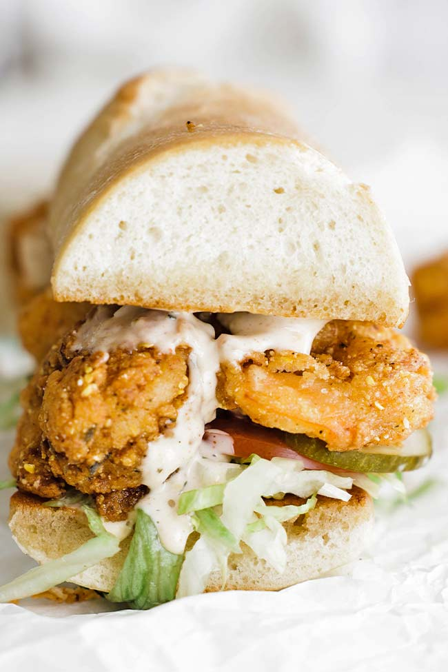

PoBoy

Recipe Credit: Billy Parisi
Description
A foodies go to seaside sandwich combines the firm container of its wheat with the
melting sweetness of coastal shrimp, oysters, and/or clams lathered in a refreshing sauce. The Po'Boy
originated in 1929 in the Martin Brothers' French market restaurant.
Ingredients
- Shrimp: You will need fresh or frozen and thawed peeled and deveined 16/20 or 26/30 shrimp.
- Bread: Classic New Orleans-style French bread is used. Feel free to use my recipe or pick it up near the
deli at most grocery stores.
- Egg: A few eggs go into the batter for the shrimp.
- Milk: I prefer to use buttermilk. However, regular whole milk can be used.
- Seasoning: My Cajun seasoning recipe works excellently, or you can use your favorite homemade or
store-bought version.
- Mustard: Stone ground or Creole mustard works fantastic in the marinade for the shrimp.
- Sauce: Traditionally, mayonnaise is used, but I used Cajun Remoulade for more complementing flavors.
- Flour: All-purpose flour is needed for the batter.
- Cornmeal: Plain cornmeal is used in the batter.
Instructions
- Peel, devein and rinse the shrimp.
- In a large bowl, whisk together the Cajun seasoning, mustard, hot sauce, buttermilk, and eggs until
combined.
- Add in the shrimp and mix well until coated. Let marinate in the fridge for 30 minutes.
- In the meantime, prepare the lettuce, tomato, and dill pickles.
- Pour some oil into a large frying pan and heat to 350°.
- Add the flour, cornmeal, Cajun seasoning, and salt to a casserole-size pan and whisk until combined.
Taste it to make sure it’s seasoned enough.
- Remove the shrimp from the refrigerator and add a handful to the pan with the flour-cornmeal mixture.
Toss very well to make sure it is coated on all sides.
- Set aside on a sheet tray lined with parchment paper and repeat the process until all the shrimp have
been coated in the batter.
- Set the shrimp on a sheet tray with a rack to drain excess oil. Repeat the process with the remaining
half of the battered shrimp.
- Spread some butter on each half of the sliced French bread.
- Toast the bread butter side down on a flat top or in a pan over low to medium heat until brown and
toasted.
- Place some lettuce down on the bottom toasted slices of bread.
- Next, evenly spread the tomatoes and pickles.
- Place on as many shrimps as you can.
- Spread a generous helping of the mayonnaise or remoulade on the top slice of bread and then add it to
the top of the sandwich.
Back to Recipes